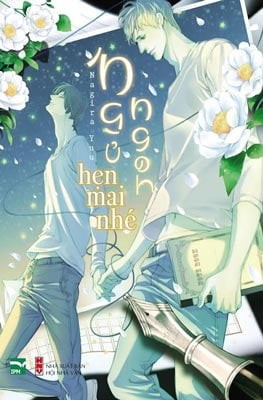

Ngũ Ngon Hẹn Mai Nhé.
GIÁ(vnd):
60.000 đ/
80.000 đ
-25%
Chi Tiết:
Ngủ Ngon, Hẹn Mai Nhé
Profile
Nagira Yu
Sinh ngày 25 tháng Một, cung Bảo Bình, nhóm máu A
Chúc mọi người năm mới vui vẻ. Hy vọng năm nay mọi người cũng gặp được nhiều điều đáng yêu.
Cover Art
Họa sĩ/Oyamada Ami
Sinh ngày 01 tháng Năm, cung Bạch Dương, nhóm máu O
Họa sĩ truyện tranh, họa sĩ minh họa
Tác phẩm tiêu biểu Theo đuổi ký ức (Libre xuất bản)
Hạnh phúc đột ngột tan vỡ, Tsugumi bơ vơ nhận được sự giúp đỡ từ chàng trai Sakutaro nhiệt tình, cho anh một
chốn dung thân.
Một nhà văn với vết thương lòng và một người hâm mộ thấu hiểu tác phẩm của anh nhất, cả hai đều gánh trên
vai một bóng đen u ám.
Hương hoa trà thơm ngát, vị đào ngọt ngào đong đầy trong ký ức. Sau một giấc ngủ dài, sáng mai thức dậy, thế
giới nho nhỏ ấy liệu có còn nguyên vẹn?